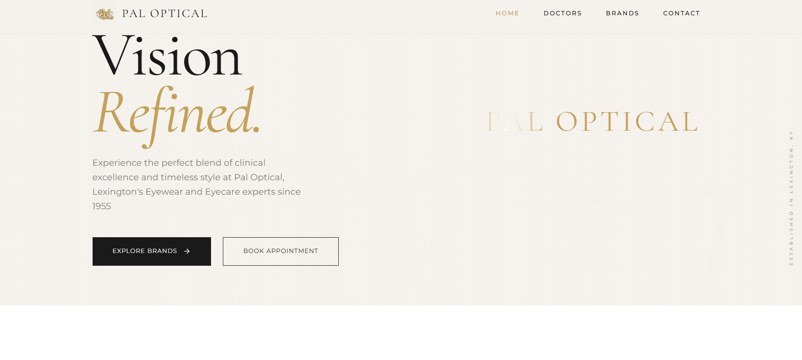
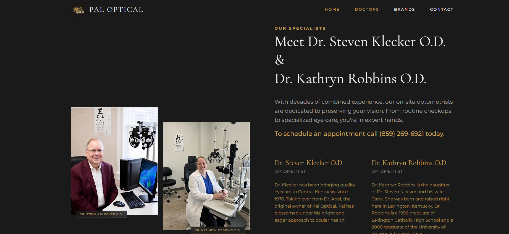
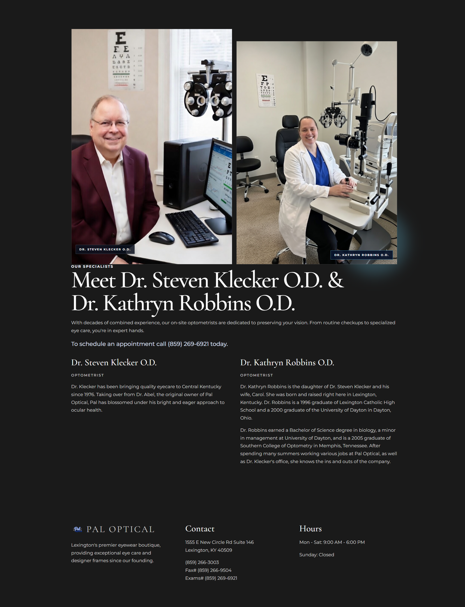
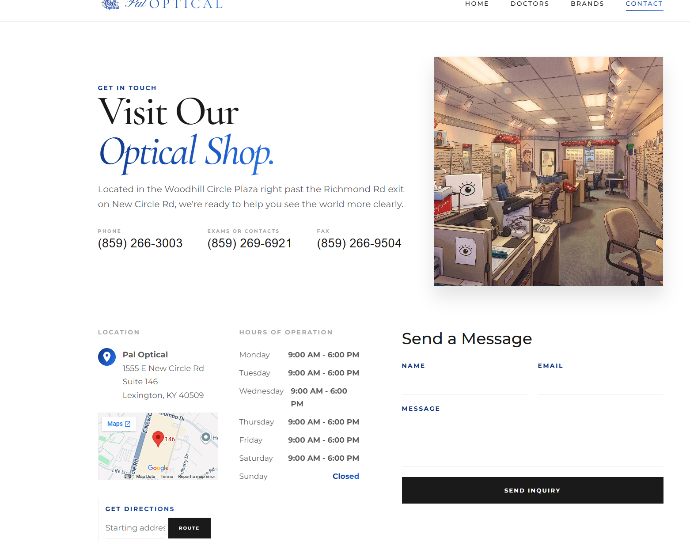

Project Case Study
PAL Optical Site
A polished public-facing business website for PAL Optical that emphasizes trust, clarity, and responsive usability across every customer touchpoint.
Overview
What This Project Delivers
PAL Optical Site was built to represent the business with the same professionalism patients expect in-person. The project focuses on clear service communication, accessible contact paths, and a visual tone that feels dependable rather than over-designed.
The site structure supports real visitor behavior: quick mobile checks for hours and contact details, desktop browsing for services, and confidence-building content that helps new patients decide to engage.
Highlights
Key Features
- Information architecture is tuned for local-business priorities like services, location, hours, and direct contact.
- Responsive implementation ensures the experience remains clear on phones, tablets, and desktop displays.
- Visual styling aligns with healthcare-adjacent trust signals through clean spacing and restrained UI patterns.
- Performance-conscious build strategy keeps load times fast for users on weaker mobile connections.
- Content structure supports ongoing updates without requiring major rebuilds.
Build
Stack And Tools
Screenshots
Professional Screenshot Review




Production screenshots from the live marketing site highlighting layout consistency across key pages.